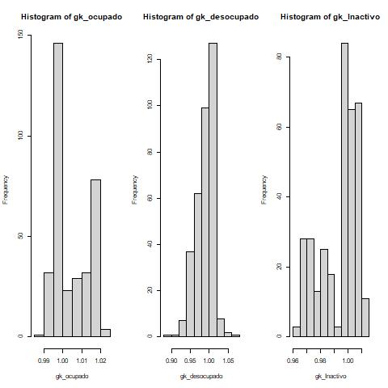

5.3 Benchmarking
El código realiza una manipulación de datos para obtener las estimaciones del modelo de área ajustado. En primer lugar, se selecciona el primer y segundo dígito de la variable dam2 para obtener la identificación de la DAM. Luego se utiliza la función inner_join() para combinar las estimaciones obtenidas del modelo con el conteo de la población por DAM, y así calcular los pesos de las DAMs. Estos pesos se almacenan en la variable wi. Finalmente, se seleccionan las variables de interés dam, dam2, Ocupado_mod, Desocupado_mod e Inactivo_mod, y se almacenan en la variable estimaciones_mod.
names_cov <- "dam"
estimaciones_mod <- estimaciones %>% transmute(
dam = substr(dam2,1,2),
dam2,Ocupado_mod,Desocupado_mod,Inactivo_mod) %>%
inner_join(conteo_pp_dam ) %>%
mutate(wi = pp_dam2/pp_dam)Los valores no suman 1 dado que se elimina la antartida.
estimaciones_mod %>% group_by(dam) %>% summarise(wi = sum(wi))5.3.1 Seleccionado variables
Este código utiliza la función dummy_cols() del paquete fastDummies para crear variables dummy a partir de la columna dam. La opción select_columns = names_cov indica que solo se aplicará la creación de variables dummy a la columna especificada en names_cov (en este caso, dam). La opción remove_selected_columns = FALSE indica que la columna original no será eliminada. El resultado final es que se agregan nuevas columnas al conjunto de datos, una por cada valor único en la columna dam, que indican si el valor está presente o no para cada fila.
estimaciones_mod %<>%
fastDummies::dummy_cols(select_columns = names_cov,
remove_selected_columns = FALSE)5.3.2 Creando las dummys
En este código se está creando una matriz de variables dummy para cada categoría de la variable dam, que en este caso es la división administrativa en la que se divide la muestra. Luego, se están multiplicando estas variables dummy por las estimaciones obtenidas del modelo en cada categoría de empleo ( ocupado, desocupado e inactivo) para cada dominio en la muestra. El resultado es una matriz de diseño que incluye tanto las variables dummy como las proporciones de empleo estimada.
Xdummy <- estimaciones_mod %>% select(matches("dam_")) %>%
mutate_at(vars(matches("_\\d")) ,
list(Ocupado = function(x) x*estimaciones_mod$Ocupado_mod,
Desocupado = function(x) x*estimaciones_mod$Desocupado_mod,
Inactivo = function(x) x*estimaciones_mod$Inactivo_mod)) %>%
select((matches("Ocupado|Desocupado|Inactivo")))ahora, se validan la concordancia de los nombre
colnames(Xdummy) == names(Razon_empleo)
data.frame(Modelo = colSums(Xdummy*estimaciones_mod$wi),
Estimacion_encuesta = Razon_empleo)Separando los nombres por cada categoría del empleo
names_ocupado <- grep(pattern = "_O", x = colnames(Xdummy),value = TRUE)
names_descupados <- grep(pattern = "_D", x = colnames(Xdummy),value = TRUE)
names_inactivo <- grep(pattern = "_I", x = colnames(Xdummy),value = TRUE)5.3.3 Obtenideno los ponderadores
El código siguiente realiza un ajuste de calibración para los datos de empleo utilizando la función calib() del paquete sampling. La función recibe como argumentos la matriz de variables dummy correspondientes a los dominios, la variable de peso muestral d, y la razón poblacional para la variable de interés ( Ocupado, Desocupados e Inactivo). Se utiliza el método de calibración lineal y se establece un máximo de iteraciones de 5000.
Posteriormente, se verifica la calidad del ajuste utilizando la función checkcalibration() del mismo paquete, la cual recibe como argumentos la matriz de variables dummy, la variable de peso muestral y la razón poblacional, junto con los resultados del ajuste previo gk_ocupado.
Finalmente, se utiliza la función summary() para imprimir un resumen de los resultados del ajuste de calibración, el cual incluye información sobre el número de iteraciones, la convergencia, y los valores de las constantes de calibración. Ahora, se ejecuta el proceso para cada una de las categorías por separado.
Ocupado
gk_ocupado <- calib(Xs = Xdummy[,names_ocupado],
d = estimaciones_mod$wi,
total = Razon_empleo[names_ocupado],
method="linear",max_iter = 5000,)
checkcalibration(Xs = Xdummy[,names_ocupado],
d =estimaciones_mod$wi,
total = Razon_empleo[names_ocupado],
g = gk_ocupado,)Desocupado
gk_desocupado <- calib(Xs = Xdummy[,names_descupados],
d = estimaciones_mod$wi,
total = Razon_empleo[names_descupados],
method="linear",max_iter = 5000,)
checkcalibration(Xs = Xdummy[,names_descupados],
d =estimaciones_mod$wi,
total = Razon_empleo[names_descupados],
g = gk_desocupado,)Inactivo
gk_Inactivo <- calib(Xs = Xdummy[,names_inactivo],
d = estimaciones_mod$wi,
total = Razon_empleo[names_inactivo],
method="linear",max_iter = 5000,)
checkcalibration(Xs = Xdummy[,names_inactivo],
d =estimaciones_mod$wi,
total = Razon_empleo[names_inactivo],
g = gk_Inactivo,)validando los \(gk\)’s de forma visual.
par(mfrow = c(1,3))
hist(gk_ocupado)
hist(gk_desocupado)
hist(gk_Inactivo)
5.3.4 Creando las estimaciones Benchmark
estimacionesBench <- estimaciones_mod %>%
mutate(gk_ocupado, gk_desocupado, gk_Inactivo) %>%
transmute(
dam,
dam2,
wi,gk_ocupado, gk_desocupado, gk_Inactivo,
Ocupado_Bench = Ocupado_mod*gk_ocupado,
Desocupado_Bench = Desocupado_mod*gk_desocupado,
Inactivo_Bench = Inactivo_mod*gk_Inactivo
)
#############################33Comparando resultados del Benchmarking
estimacionesBench %>%
group_by(dam) %>%
summarise(Ocupado_Bench = sum(wi*Ocupado_Bench),
Desocupado_Bench = sum(wi*Desocupado_Bench),
Inactivo_Bench = sum(wi*Inactivo_Bench)) %>%
inner_join(indicador_agregado)| dam | Ocupado_Bench | Desocupado_Bench | Inactivo_Bench | Ocupado | Desocupado | Inactivo |
|---|---|---|---|---|---|---|
| 01 | 0.5849 | 0.0487 | 0.3665 | 0.5849 | 0.0487 | 0.3665 |
| 02 | 0.5561 | 0.0556 | 0.3882 | 0.5561 | 0.0556 | 0.3882 |
| 03 | 0.5246 | 0.0532 | 0.4222 | 0.5246 | 0.0532 | 0.4222 |
| 04 | 0.4697 | 0.0640 | 0.4663 | 0.4697 | 0.0640 | 0.4663 |
| 05 | 0.5176 | 0.0562 | 0.4262 | 0.5176 | 0.0562 | 0.4262 |
| 06 | 0.5235 | 0.0411 | 0.4354 | 0.5235 | 0.0411 | 0.4354 |
| 07 | 0.5144 | 0.0387 | 0.4469 | 0.5144 | 0.0387 | 0.4469 |
| 08 | 0.4771 | 0.0601 | 0.4629 | 0.4771 | 0.0601 | 0.4629 |
| 09 | 0.4903 | 0.0501 | 0.4596 | 0.4903 | 0.0501 | 0.4596 |
| 10 | 0.5323 | 0.0411 | 0.4266 | 0.5323 | 0.0411 | 0.4266 |
| 11 | 0.6180 | 0.0326 | 0.3494 | 0.6180 | 0.0326 | 0.3494 |
| 12 | 0.5923 | 0.0376 | 0.3701 | 0.5923 | 0.0376 | 0.3701 |
| 13 | 0.6040 | 0.0528 | 0.3432 | 0.6040 | 0.0528 | 0.3432 |
| 14 | 0.5060 | 0.0479 | 0.4461 | 0.5060 | 0.0479 | 0.4461 |
| 15 | 0.5100 | 0.0676 | 0.4224 | 0.5100 | 0.0676 | 0.4224 |
| 16 | 0.5023 | 0.0437 | 0.4540 | 0.5023 | 0.0437 | 0.4540 |
estimaciones <- inner_join(estimaciones,estimacionesBench)Ordenando la base con las estimaciones directas y predichas
saveRDS(object = estimaciones, file = out_estimacion)rm(list = ls())
knitr::opts_chunk$set(warning = FALSE,
message = FALSE,
cache = TRUE)
library(kableExtra)
tba <- function(dat, cap = NA){
kable(dat,
format = "html", digits = 4,
caption = cap) %>%
kable_styling(bootstrap_options = "striped", full_width = F)%>%
kable_classic(full_width = F, html_font = "Arial Narrow")
}